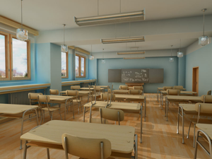
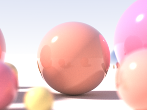
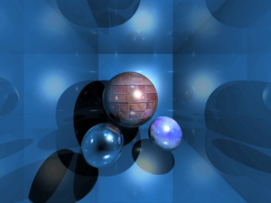
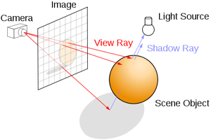
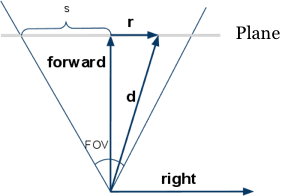
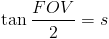

1.Introduction
When talking about 3D, people are amazed by its beautiful frames, which they look as if they really exist. In real time rendering, the APIs, such as OpenGL and DirectX, render numerous triangles or other primitive types, and then rasterize the image. But this only support local illumination, which means no real shadow, reflection and refraction are truly presented. In fact, a rasterization rendering system always simulate these effects by the means of shadow mapping and environment mapping.


In order to make a more realistic rendered scene image, Turner Whitted put forward ray tracing algorithm in 1980.
2.Ray-Tracing
Ray tracing is a technique for rendering 3D scene with global illumination, which is basically an attempt to imitate nature. The colors that you see are rays of light cast by the sun, bouncing around the detailed scenery of nature, and finally hitting your eye.
For instance, render a scene with spheres, a light source and a camera.

First of all, imagine the camera is standing in front of a huge white canvas, waiting to paint, to fill each pixel with a certain color. Next choose a pixel and create rays from camera through the pixel. This is called the primary ray. The task of it is to find first primitive hit, or in other words, to solve the problem of visibility.
This small part of the whole object is visible or not, is judging by if there is intersection point between the primary ray and the object.
3.Canvas
The output of raytracing is an image, that means, you can represent it in a 2D array.Here, I use "canvas", which is a feature of HTML5. This is a simple test, to colorize each pixel of the canvas. It's getting redder and redder from left to right and greener and greener from top to bottom.
Try:
1. Modify the third pixels[i++] = 0 to 255 and then what happen?
4.Basic knowledge
4.1 Ray
In Euclidean geometry, a ray is part of a line which is finite in one direction, but infinite in the other. It can be defined by two points, the initial point, A, and one other, B. It's parametric function looks like this:
4.2 Primary Rays
Prior the primary rays a generated from the origin of the camera through each pixel of the projection plane. Thus a primary ray can hit a light source, an object within the virtual scene or nothing. This first ray shoot into the virtual scene is also called camera ray or visibility ray. The first object hit of the primary ray represents the object (or its part) visible to the camera.
4.3 Secondary Rays
In case that a primary ray hits an object within the virtual scene an intersection point of this object is found. This means that this point hit is within a shadow, not directly illuminated by an light source. To retrieve the diffuse amount of light illuminating this point three new rays are generated at this spot, the secondary rays. The first type of a secondary ray represents a shadow ray, the second a reflection ray (e.g. the object hit is a mirror or shiny surfaces). The third kind of a secondary ray is a ray of refraction, in case the object hit within the scene is a translucent object (e.g. glass).
5.Camera
The common projection system are orthographic projection and perspective projection. Here I will talk about perspective projection first.

From the image we know, forward and right, represent respectively the forward vector and right vector. Because the position of camera is fixed, so we can generate a ray with the position of the pixel(x, y) and it's direction. The relation between FOV and s is:

6.Render Depth
Depth is the distance between camera and the most close intersection point, because of the depth range is from zero to infinite, in order to display it out, it can be mapped to a range of gray. Here with the [0, maxDepth] mapped to [255, 0], that the depth of 0 pixels for the white, depth of maxDepth pixel is black.
7.Render Normals
Intersection tests also calculated the normal vector of the intersection point, where it can be visualized. Normal
vector is a unit vector, its scope of each element is [-1, 1]. The unit vector mapped to the color can be
implement like this:
the (x, y, z) maps to (r, g, b), ranging from [-1, 1] maps to [0, 255].
At the top of the Sphere, its normal vector is close to (0, 1, 0), so is light green (0.5, 1, 0.5).
8.Material
Rendering depth and normal is only for testing and debugging, in order to display the "real" color, it needs to define the color of intersection point, that is called the material.
In Computer Graphic, the chess board is the most common test texture. Here I don't need to consider texture mapping problem, just calculate (x, z) coordinates of a location and then determine black or white color.
9.Reflection
Generally speaking, some materials are not fully reflective (except mirror), so add for material with a property called reflectiveness. Reflection function is very simple, continue tracing if the ray hits the none-zero material reflectiveness, and mix the result with reflectiveness. For example, a reflectiveness is 25%, so it returns 75% of its color, and plus 25% of the reflective color returned.
10.Video
This short video shows how ray tracing behaves when it comes to different material:
11.At last
Reference:
Jan Wieferich, The Principles of Ray Tracing
Saranat, Example material with RayTrace Rendering
Wikipedia, Ray Tracing
Slime, The JavaScript Raytracer
SIGGRAPH HyperGraph Education Project, Ray Tracing